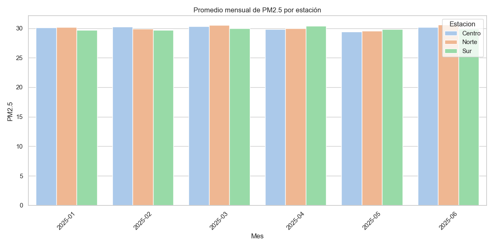
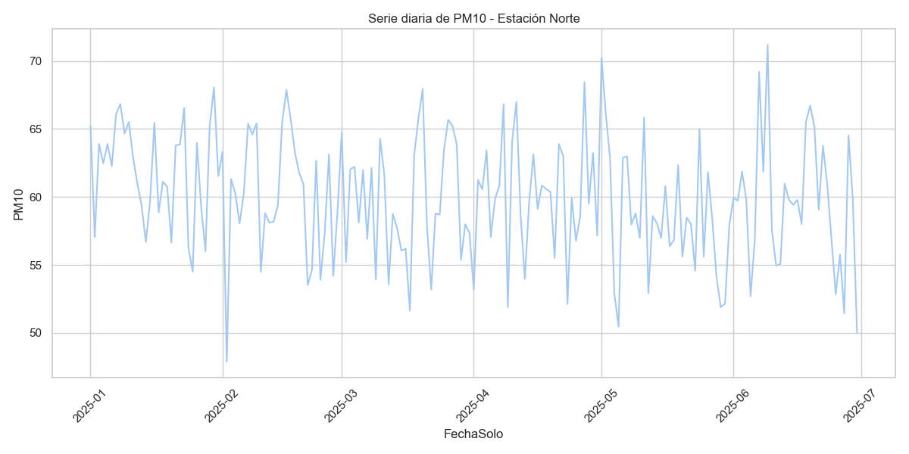
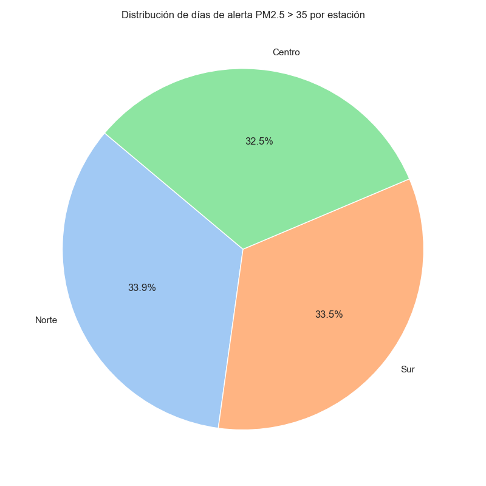
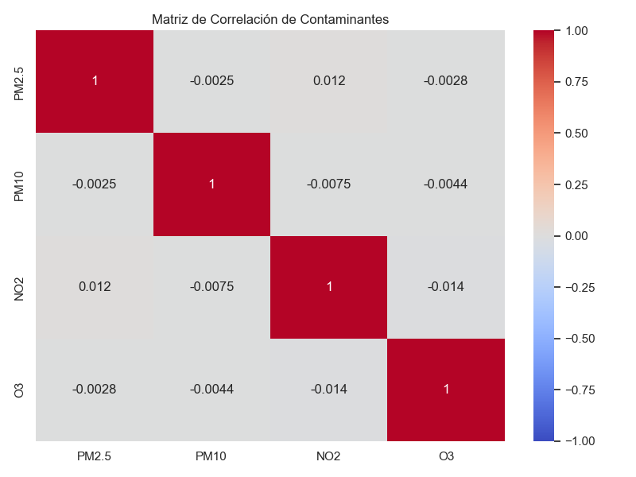

Reporte de Calidad del Aire
Primeros 10 registros
{head10_table}
Estaciones
{estaciones}
Conteo de registros por estación
{conteo_table}
Promedio general de contaminantes
{prom_table}
Punto con mayor contaminación total
Fecha y hora: {max_fecha}
Estación: {max_estacion}
Valor total: {max_valor}
Gráficos
Promedio mensual de PM2.5 por estación

Serie diaria de PM10 estación más crítica

Distribución de días de alerta PM2.5 > 35 por estación

Matriz de correlación de contaminantes
